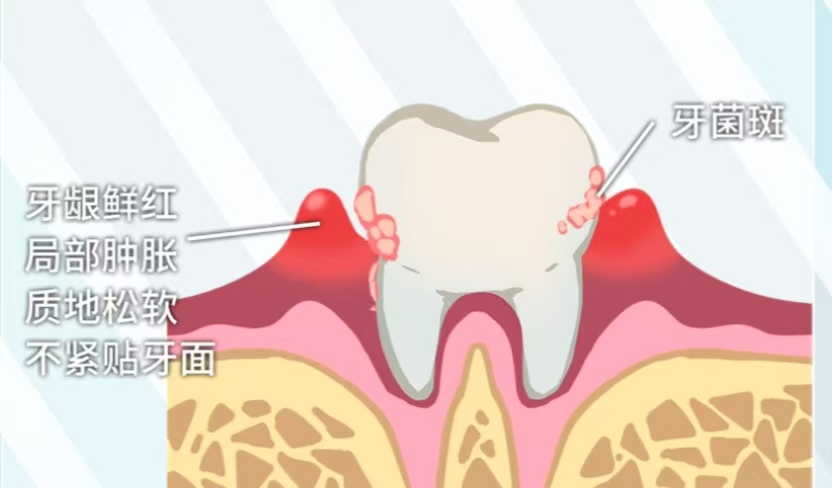
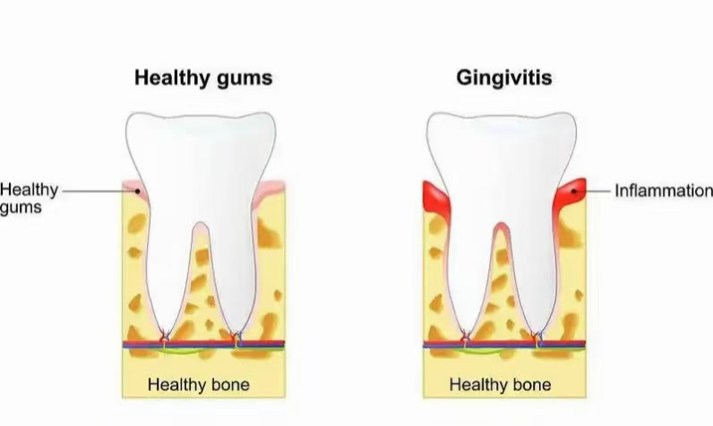

牙龈炎
危险程度
低风险
就医建议
出现牙龈红肿、出血、口臭等症状时
最佳就医时间
一旦发现牙龈有出血、红肿等异常表现时
什么是牙龈炎?
牙龈炎(Gingivitis)是一种常见的口腔疾病，主要由于口腔内细菌大量繁殖和牙菌斑所产生的有害物质作用于牙龈引起的炎症。
关键特征：
- 牙龈红肿、出血，尤其是刷牙或咬硬物时
- 牙龈由正常的粉红色变为鲜红或暗红色
- 牙龈松软，缺乏弹性，表面光滑发亮
牙龈炎分类
轻度牙龈炎
牙龈缘和龈乳头轻微充血，牙龈边缘稍钝
中度牙龈炎
牙龈明显红肿，增生症状常伴随出现，探诊时有出血
重度牙龈炎
牙龈严重红肿，探诊有持续不断的出血，可能需要就医治疗
图示说明：
图1：牙龈炎发病机制示意图

上图展示了牙龈炎的发病机制
图2：正常牙龈与牙龈炎对比图

上图展示了正常牙龈与牙龈炎的对比
主要症状
感觉症状
牙龈红肿
牙龈红肿、刷牙出血、口臭
牙龈疼痛
牙龈疼痛、退缩、持续性口臭
牙龈出血
牙龈自发性出血、牙周脓肿、严重口臭、牙齿松动
发展特点
初期
牙龈轻微红肿和出血，症状不明显
发展期
牙龈红肿加重，可能出现增生，刷牙和探诊时出血更明显
严重期
牙龈严重红肿、牙周袋加深、牙齿松动、溢脓、脱落
治疗方法
一般治疗
- 改善口腔卫生
- 去除牙菌斑和牙石
- 使用正确的刷牙方法
药物治疗
- 使用抗菌含漱液或抗生素，控制炎症
- 服用止痛药缓解肿痛
手术治疗
- 龈上洁治术、龈下刮治术
- 牙龈切除术
- 牙龈成形术
预防建议
口腔卫生
每天早晚刷牙，使用牙线清洁牙缝
定期检查
定期进行口腔检查和洗牙，及时处理口腔问题
疾病控制
控制全身性疾病，如糖尿病，避免吸烟、酗酒等不良习惯